Silvest Vally
Silvest
- 1. Lord Aelfwyn
- 2. Ceric
- 3. Raglnak
- 4. Jodrich
- 5. Howard Kaps
- 6. Schrute
- 7. Etrois
- 8. Sozal
- 9. Karter Jons
- 10. Wilson Johnson
- 11. Galen
Eastwatch
- .
- .
- .
- .
- .
- .
Cliffside
- .
- .
- .
- .
- .
- .
- .
Silvest Quest
Knight of Silvest
| Difficulty | Skills |
|---|---|
| Apprentice | Combat |
| NPC Quest Start | Monster | Reward |
|---|---|---|
| Lord Aelfwyn | Many different creatures |
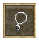">
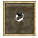">
">
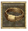">
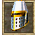">
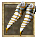">
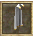">
">
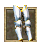">
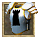">
|
 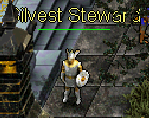
Speak to Lord Aelfwyn
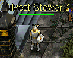
Speak to Lord Aelfwyn
Lord Aelfwyn: I do not speak to those who have not pledged allegiance to Silvest...begone!
You must go speak to the Silvest Steward next to the spawn gate.
Silvest Steward: Welcome to Silvest! You made an excellent choice in comeing here He shakes your hand I'm the Steward of Silvest. I'm here to help Aelfwyn manage the city and ensure it has what it needs.
I've been doing this for many years, but never before have I seen someone with such wisdom and energy! In fact, you'd fit right in around here. Yes, I can see it now! Why don't you align with our city and help make it the best in the land? There are incredible perks. All Silvest citizens are granted 1 extra orb of intelligence... err not that you'd need it. Your intelligence can reach 101, too. Well, you can
only pick one city... He mumbles something about the Orcs and Elves ...for tax reasons. It's very complicated.. Just let me know and I'll sign you up right away! Do you wish to align with Silvest?
Player: Yes!
Silvest Steward: Splendid! Our city is already better for it! Well, no time to chat when there's work to be done. See you around! Oh don't forget to see Aelfwyn in the town hall.
- You have gained the intelligence of Silvest!
- You have gained 500 faction with the city of Silvest!
- 2,750 Experience Pool experience may very
Speak to Lord Aelfwyn.
Lord Aelfwyn: Greetings! Ah...A loyal servant of Silvest... The times are dire! Forces of evil are threatening our fair city. Lotor and his Knights are doing the best they can, but I fear it is not enough. For the future of Silvest I need brave warriors willing to seek out and slay the foul creatures that plague us... Are you willing to help?
Player: Yes! His evil must be defeated! The task at hand is most dangerous! I believe this evil has been spawned by Talazar himself! Do you dare stand against this Dark Fiend?
Player: Yes! His evil must be defeated!
Lord Aelfwyn: Very good! May Silvest be saved... The task I will give you will test your courage and wisdom! Return to me after Talazar's power has been weakened!
QUEST RECEIVED: Knight of Silvest, Lord Aelfwyn of Sivlest asks you to slay x amount of Creatures.
Head out and kill the required creatue. You will be updated as you kill them.
QUEST UPDATE: Kill x amount more creature for Lord Aelfwyn of Silvest
QUEST UPDATE: Knight of Silvest, Return to Lord Aelfwyn in Silvest!
Lord Aelfwyn: Silvest be praised! You have made the human lands more secure from the evil plague of Talazar... Speak with Lady Aelfwyn about further rewards for your service. She is in Varg, a short journey north and west from Silvest at the Temple of Kuthos. Thank you again...
- You have gained X amount of faction with the city of Silvest
- Ramdon Amounts Experience Pool experience may very
Travel out the west side of silvest to head to Varg.
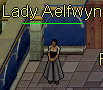
Speak to Lady Aelfwyn.
Lady Aelfwyn: Greetings loyal warrior of Aelfwyn... Honored servant. Here is your reward for your loyal patronage. Continue to serve...
Repeat this quest gaining Faction Points to earn the complete Silvest Set.
- 500 Faction Points Necklace of Silvest
- 800 Faction Points Ring of Silvest
- 1300 Faction Points Gloves of Silvest
- 1800 Faction Points Belt of Silvest
- 2300 Faction Points Helm of Silvest
- 2800 Faction Points Boots of Silvest
- 3300 Faction Points Cloak of Silvest
- 3800 Faction Points Guardian of Silvest
- 4300 Faction Points Leggings of Silvest
- 4800 Faction Points Armor of Silvest
Quest Complete
You have gained faction with Silvest for your heroic work! See Lady Aelfwyn in Varg about a reward.Spice It Up
| Difficulty | Skills |
|---|---|
| Apprentice | Tradeskill |
| NPC Quest Start | Reward |
|---|---|
| Ceric |

|
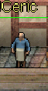
Speak to Ceric.
Ceric: Greetings, traveler! Perhaps you're looking to earn a little coin? My brother Cearl and I have been looking to spice up the menu here at the Triddle for some time, but I simply can't leave my establishment. If you have the talent for fishing, what say you to helping a busy man?
Player: I'm always looking for extra coin!
Ceric: Fantastic! I think a nice, flaky fish would be just the thing for hungry belies come out of the dark woods for sup! Bring me Bluefin so I can experiment. 50 should be enough for now. You should be able to find plenty of them at the docs to the south. Good luck!
QUEST RECEIVED: Spice it Up, Fish for 50 Bluefin for Ceric, owner of Triddle's Tavern in Silvest.
Head south to the dock with your fishing pole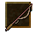 Stand next to the water source click on your fishing pole then on the spot in the water you want to try and catch a fish. Keep fishing until you get all 50 Bluefin. 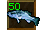
QUEST RECEIVED: Spice it Up, You have collected enough Bluefin to complete the quest.
Ceric: Ah, welcome back! I was hoping to see you - and how many bluefin have you got there? you have the fish? Splendid! This will bring in more customers, I'm sure of it! And as for your reward... He reaches beneath the counter nad produces a brown sack that clinks as it's placed on the counter and nudged in your direction. I appreciate the help. Now to test out some new dishes!
- Gold Received: 500
- 88,000 Experience Pool experience may very
Ceric has paid you 500 gold for your help.
Quest Complete
Join Forces
| Difficulty | Skills |
|---|---|
| Apprentice | Combat |
| NPC Quest Start | Reward |
|---|---|
| Raglnak | 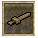"> 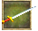"> |
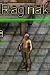
Speak to Raglnak.
Raglnak: Good day, young adventurer. I hope your journeys are gratifying. BARTENDER! BARTENDER! Antoher ale! He grumbles The evil upon this land has made my expeditions more dependent upon my swordsmanship. Do you agree?
Player: Yes, I have noticed the same, Raglnak
Raglnak: Aye, indeed you have, lass! I cannot even chop wood in the forest without keeping my sword in the other hand... Dark times, indeed. Those of us with good and noble intentions should band together! He raises his glass to you Let us join our strength to eliminate the growing evil! I shall train you in the art of Sword Combat... And you .. You shall listen to my
instruction, and humor me with your naive questions! Ho Ho! What say you?
Player: Yes, let us slay evil together!
Raglnak: Admirable decision! Bartender! Give this adventurer an ale! 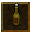 Thy training begins now. Take this practice sword...
You must kill one kobold, one snake, and one orc renegade with this sword. This will prove you have the agility and courage to advance in sword combat. Return to me when your deeds are accomplished! I myself have much work to attend to in town...
QUEST RECEIVED: Join Forces, You leave Silvest with Raglnak's practice sword. Use it to kill one Sanke, one Kobold, and one Orc Renegade.


 Head out of town there are plenty of Snakes around Silvest. The Kobolds are northeast of silvest around the mountain towards Silvest Lake. The Orc Renegades are located in a cave in the southern mountains. Head south to the docks then continue east following the mountain north to the cave.
As you kill each type you will be updated.
Head out of town there are plenty of Snakes around Silvest. The Kobolds are northeast of silvest around the mountain towards Silvest Lake. The Orc Renegades are located in a cave in the southern mountains. Head south to the docks then continue east following the mountain north to the cave.
As you kill each type you will be updated.
QUEST UPDATE: You have vanquished an Snake for the Sword Quest!
QUEST UPDATE: You have vanquished an Kobold for the Sword Quest!
QUEST UPDATE: You have vanquished an Orc Renegade for the Sword Quest!
When you have completed the task you will be updated one more time.
QUEST UPDATE: Join Forces, You have completed your training. Return to Raglnak!
Raglnak: Let's see what you have accomplished... You have killed a Kobold! You have killed the Snake! You have killed the Orc Renegade! You have proven your worthiness to wield a real warrior's weapon. Here is a sword for your accomplishments and if anything, you now have the ability to practice on your own. Fare thee well, young adventurer.
- ITEM Received: Heavy Short Sword
- 5,500 Experience Pool experience may very
You have proven yourself to Raglnak and received a heavy sword in return!
Quest Complete
Put Them Down
| Difficulty | Skills |
|---|---|
| Apprentice | Combat |
| NPC Quest Start | Reward |
|---|---|
| Jodrich |
|
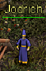
Speak to Jodrich
Jodrich: Jodrich eyes you up and down He laughs nervously No need to come so close, there, hehehehehe... Though, I could use your help... I have a problem, you see. I'm terrified of bats and an even worse variety has been becomeing increasingly common around Silvest lately...
Please. I need you to put them down!!! They're calle.. He gulps ...Sonic Flyers.
Player: Yes, let us slay evil together!
Jodrich: My gratitude, stranger! I don't think i can sleep until you do. He wrings his hands Don't underestimate them! And, please, come back safely. I'm scared to put a number on it, but to be fair, lets agree that you will kill 50 of those things.
QUEST RECEIVED: Put Them Down, Slay 50 Sonic Flyers for Jodrich of Silvest.
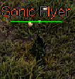
The Sonic Flyers spawn near the east side of Sivlest near the mountain range. As you slay them your will be updated.
QUEST UPDATE: You have killed 50 Sonic Flyers for Jodrich! When you have killed them all you will be updated one last time.
QUEST UPDATE: Put Them Down, Return to Jodrich in Silvest!
Jodrich: You did it? I'm so grateful! Now I can sleep peacefully knowing that they won't be able to get me in the night! Or at least it will buy me enough time to collect some firewood for my hearth... Here... I have some money I've save up. It should be a suitable reward. He hands you a sack of coin I just hope they don't bother me anymore... Good luck with your travels!
- GOLD RECEIVED: 1000
- 11,000 Experience Pool experience may very
Quest Complete
Jodrich has rewarded you for dealing with his problem.Nest of Pests
| Difficulty | Skills |
|---|---|
| Apprentice | Combat |
| NPC Quest Start | Reward |
|---|---|
| Howard Kaps |
|
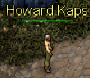
Speak to Howard Kaps.
Howard Kaps: I went out for a stroll and came across a bed of fierce Fire Ants. These ants are not the usual garden-variety..the sting is so painful it lays you up in bed for days! To think that our good town could be victimized by these pests...it's maddening! Help exterminate the mound by killing 100 of them for me!
Player: I shall crush them underfoot!
Howard Kaps: That's the spirit! King Lotor would be wise to recruit more like you. Now then. The nest is to the northwest, near the mountains. Remember - you must kill them in their nest!
QUEST RECEIVED: Nest of Pests, Exterminate 100 Fire Ants for Howard Kaps, a concerned citizen of Silvest.
 Travel northeast to the Fire Ant mound. You need to kill them within the area of their mound. As you are killing them you will be updated.
Travel northeast to the Fire Ant mound. You need to kill them within the area of their mound. As you are killing them you will be updated.
QUEST UPDATE: You've killed 100 Fire Ants for Howard Kaps
Once you have kill all of them you will be updated one last time.
QUEST RECEIVED: Nest of Pests, Return to Howard Kaps, in Silvest Guard Outpost, with news of the Fire Ant extermination.
Howard Kaps: The mound has been cleansed! It is safe to stroll the paths of Silvest once again! Take this gold as a token of my appreciation!
- GOLD RECEIVED: 2500
- 27,500 Experience Pool experience may very
Quest Complete
You exterminated the Fire Ants for Howard KapsThe Wrong Crowd
| Difficulty | Skills |
|---|---|
| Apprentice | Combat |
| NPC Quest Start | Reward |
|---|---|
| Howard Kaps |
|
Speak to Howard Kaps.
Howard Kaps: It's a good day to stroll in the mountains to the north of town! perhaps you would like to help with another matter? My son fell in with a foul group who call themselves 'Cultists'. I was able to pry him from their grasp, but not before thye had stolen all of his possessions... .. including a ring
that my father had given him. If you are willing (and I think you are able) please venture to the west to their temple and reclaim this ring.
QUEST RECEIVED: The Wrong Crowd, Retrieve the Kaps family ring from the cultist temple west of Silvest.
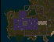
 The Cultist lair is just west of Silvest. When you get their just kill them until you find the ring. As you kill them you will be updated that you didn't find the ring. You search the body, but don't find anything. When you find the key you will be updated.
The Cultist lair is just west of Silvest. When you get their just kill them until you find the ring. As you kill them you will be updated that you didn't find the ring. You search the body, but don't find anything. When you find the key you will be updated.
QUEST UPDATE: The Wrong Crowd, You fond the Kaps family ring! Return to Howard Kaps.
Howard Kaps: It's a good day to stroll in the mountains to the north of town! You fond the ring! Veldan be praised! Take this as a small token of my thanks for your service!
- GOLD RECEIVED: 5,000 Gold
- 49,500 Experience Pool experience may very
Quest Complete
You returned the family ring to Howard KapsJuicy
| Difficulty | Skills |
|---|---|
| Apprentice | Traveling |
| NPC Quest Start | Reward |
|---|---|
| Schrute | EXP |
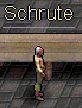
Speak to Schrute.
Schrute: I need someone to deliver news about this year's crop of beets ot my cousin Mose in Vrethpool. Tell him the harvest was quite good and he should be expecting his annual supply of beet juice within the month!
Player: Beet juice, you say? Well...
Schrute: Good, good. I've plenty work to tend here with the beet harvest. My hands will be pink for months!
QUEST RECEIVED: Juicy, Schrute of Silvest asked you to tell Mose in Vrethpool about his terrific beet harvest.
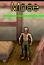 Schrute: The beet crop is in? oh happy day! I can't wait to taste the sweet nectar of Schrute's beets!
- 5,500 Experience Pool experience may very
Quest Complete
You delivered the juicy news to Mose.Quite Entranced
| Difficulty | Skills |
|---|---|
| Apprentice | Searching & Combat |
| NPC Quest Start | Reward |
|---|---|
| Etrois | 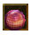"> |
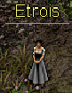
Speak to Etrois.
Etrois: Who's there??? I hear your footsteps approach...though you are not known to me... She draws a dagger
Player: Peace! I am not an enemy!
Etrois: Excuse me for being so hostile. She sheaths her dagger I wasn't raised that way, I assure you! Since those cursed marsh lights took my sight, I have become quite fearful...
Option: 1
Player: Marsh lights?
Etrois: Aye, marsh lights. Tis a mystical green light that rises up out of the swampy lands at night. I became quite entranced with them... Gandmam says that evil fairy folk live inside them and wish us ill. I didn't want to believe her, though now I know better! I...hate to bother you..but I wonder...I heard there could be a cure for my disease.
I need a small assortment of items for this recipe, but I cannot collect it myself, obviously.
Option: 2
Etrois: She nods It was difficult at first, but I've become accustomed to my life. Do not feel sad... She smiles cheerfully Still, I do miss seeing beautiful magic spells, and lovely flowers... I...hate to bother you...but I wonder... I heard there could be a cure for my disease. I need a small
assortment of items for this recipe, but I cannot collect it myself, obviously.
Player: Say no more. I will help find a cure, lady.
Etrois: Her face brightens What hope I have! Thank you, kind soul! First, you must gather a goodly number of bloodroot. By foraging, of course. I hear it has other healing properties as well... I heard Father say that he had used it on his wounds, once.
QUEST RECEIVED: Quite Entranced, Forage in the wilderness and collect 43 Bloodroot for Etrois of Silvest.
Grab your foraging stick 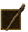and start foraging any where you can untill you collect 43 bloodroot. 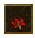 When you have them all you will be updated.
QUEST UPDATE: You have collected enough Bloodroot to complete the quest.
Return to Etrois with the bloodroot.
Etrois: Is that you? She inclines her ear in your direction I hope you fare well in your quest to find bloodroot... Ah, bloodroot! It smells so fresh! I do not envy your next task... That is, if you still want to help me. I next need a small nuber of scorpion stingers...
QUEST UPDATE: Quite Entranced, Harvest 23 Scorpion Stingers for Etrois.
- 1,650 Experience Pool experience may very
Head outside of town and kill scorpions untill you collect enough Scorpion Stingers. 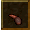
QUEST UPDATE: You have collected enough Scorpion Sting to complete the quest.
Etrois: Ah, I thought that was you! And you are back with scorpion stingers, yes? She counts the stingers This is terrific! All 23. I cannot bear to be near those horrid scorpions...ugh! Nasty, nasty creatures. Now I almost have it! I just need a small handful of toad eyes. 13. Plague toads are most common in the woods. It should not take very long! Though I am curious about how you will get them out of the head...
QUEST RECEIVED: Quite Entranced, Harvest 13 Toad Eyes for Etrois.
Head out to the Cultist Lair west of town. Kill Plague Toads untill you collect enough Toad Eyes. 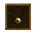
QUEST UPDATE: You have collected enough Toad Eye to complete the quest.
Etrois: Back again, I see - or here, rather! You have returned with toad eyes, I hope? She collects the components in here apron Now I must spend some time preparing this tincture... Thank you! Thank you again, I say! The gods have heard my prayer - I will no longer be the outcast! Though I have not much to reward you I did find this orb in the dust under the troughs here. I thought it felt heavy, and interesting... If nothing else, you could sell it. Fare well, and may your journeys be rewarding!
Etrois hands you an orb which swirls with alchemical magic.
- ITEM RECEIVED: Mystic Orb of Alchemy
- 22,000 Experience Pool experience may very
Quest Complete
Etrois rewarded you for your help with a strange object she found on the groundSomething's Bugging Sozal
| Difficulty | Skills |
|---|---|
| Apprentice | Combat |
| NPC Quest Start | Reward |
|---|---|
| Sozal | 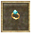"> |
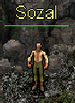
Speak to Sozal.
Sozal: Hmm...aloner, I see... As am I. He gestures to the entrance of the cave Inside this cave are slugs most foul... If you would take care of them for me, you shall be rewarded...
Player: Indeed! The fouler, the better!
Sozal: Yes, you do look like the kind that would enjoy that sort of thing. Very well! Kill 40 slugs before you return!
QUEST RECEIVED: Something's Bugging Sozal, Take care of 40 Cave Slugs for the hermit Sozal in the coastal cave northwest of Cliffside.
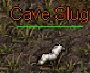
Head in to the cave and kill the 40 Cave Slugs. As you are killing them you will be updated.
QUEST UPDATE: You have killed 40 Cave Slugs for Sozal!
When you have killed all 40 you will be updated one final time.
QUEST UPDATE: Something's Bugging Sozal, Return to Sozal!
Sozal: You took care of the slugs? Take this gold as a reward. I have another task for you... I'm sure you noticed the Cave Spiders while you were venturing in the cave. Slay 50 of them. Beware, their venom has a nasty bite!
- GOLD RECEIVED: 3,000 gold
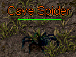
Head in to the cave and kill the 50 Cave Spiders. As you are killing them you will be updated.
QUEST UPDATE: You have killed 50 Cave Spiders for Sozal!
When you have killed all 50 you will be updated one final time.
QUEST UPDATE: Something's Bugging Sozal, Return to Sozal!
- ITEM RECEIVED: Ring of Sozal
- 16,500 Experience Pool experience may very
Quest Complete
You were richly rewarded for helping SozalThe Lake
| Difficulty | Skills |
|---|---|
| Apprentice | Combat |
| NPC Quest Start | Reward |
|---|---|
| Karter Jons |
|
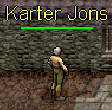
Speak to Karter Jons.
Karter Jons: To the east there is a beautiful lake... It has been befouled by Kobolds! Find their fort on the north isde of the lake and eliminate 50 of the Pests!
Player: That's terrible! I will hunt the creatures.
Karter Jons: A right an' noble thing to say!
QUEST RECEIVED: The Lake, Kill 50 Kobolds near the Silvest Lake, found east of Silvest.
Head east to the lake and kill 50 Kobolds. As you are killing them you will be updated.
QUEST UPDATE: You have kill 50 Kobolds for Karter Jons
When you have killed all 50 you will be updated one final time.
QUEST RECEIVED: The Lake, Return to Karter Jons, whom you met in the guard post north of Silvest.
Karter Jons: The Kobolds have been humbled by your hand, I see! You must accept this gold as a token of my respect for you. Return to me once you are rested. I may have another task for you...
- GOLD RECEIVED: 3,000 Gold
- 27,500 Experience Pool experience may very
Quest Complete
You were richly rewarded for helping Karter Jons. Return to him for more work.The Fort
| Difficulty | Skills |
|---|---|
| Adept | Combat |
| NPC Quest Start | Reward |
|---|---|
| Karter Jons | EXP |
Speak to Karter Jons.
Karter Jons: I've heard news that the Kobolds are going to further expand their base! The guards recently caught a stray and made him bark. You should go back to the Kobold Fort and find the pages of their plans. These plans can be found on the ones they call Brigands!
QUEST RECEIVED: The Fort, Search Kobold Brigands near Silvest Lake to find 3 pages of the Kobold Fort plans.
 Head east to the lake and kill Kobold Brigands. As you are killing them you will get messages.
Head east to the lake and kill Kobold Brigands. As you are killing them you will get messages.
You don't seem to find anything that Karter Jons could use...
Once you find a page you will be updated.
QUEST UPDATE: You've found the first page of the Kobold plans!
QUEST UPDATE: You've found the second page of the Kobold plans!
When you find the last page you will be updated for the last time.
QUEST UPDATE: The Fort, You've found the plans to expand the Kobold Fort! Return to Karter Jons!
Karter Jons: The plans! These look to be very useful. unfortunately, I can't make heads or tails out of them... Take the plans to Wilson Johnson in Hothbra. He is an expert in their language!
- ??? Experience Pool experience may very
Quest Complete
Bring the plans to Wilson Johnson in HothbraThe Attack
| Difficulty | Skills |
|---|---|
| Adept | Combat |
| NPC Quest Start | Reward |
|---|---|
| Wilson Johnson | EXP |
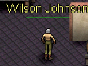
Speak to Wilson Johnson in Hothbra.
Wilson Johnson: Hmmmm...these Kobold Fort plans look interesting. It seems they ae expanding the fort in order to mass their forces. This could only mean some form of attack on Silvest! Return to Silvest and speak with Guard Captain Lowes about this at once!
QUEST RECEIVED: The Attack, Tell Guard Captain Lowes in Silvest about the Kobold Attack.
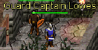
Return to Silvest to speak to Captain Lowes.
Guard Captain Lowes: So you are the one Karter Jons spoke of. He must have told you about the Kobold threat to our city. Wai, what is that? News from the north? What? He peers off in the distance The horde approaches!! We are severely undermanned.
You must fight for Silvest! You must slay 10 of their ranks in the next 5 minutes. Follow the road to the north. They come! Save Silvest!
QUEST UPDATE: The Attack, Slay 10 Kobolds in 5 minutes.
Head north and kill 10 of the Kobolds before the 5 minutes are up. You will be updated as you kill them.
QUEST UPDATE: You have killed 10 Kobolds for Guard Captain Lowes!
When you have killed all 10 you will be updated one final time.
QUEST UPDATE: The Attack, Return to Guard Captain Lowes in Silvest!
Guard Captain Lowes: You return alive! We need brave warriors like you here in Silvest. I know we cannot offer you enough, however, to join the ranks of our guards... You will have to have our thanks as your reward...
- Your faction ranking with Sivlest has increased by 500!
- ??? Experience Pool experience may very
Quest Complete
You helped defeat the Kobold hord!